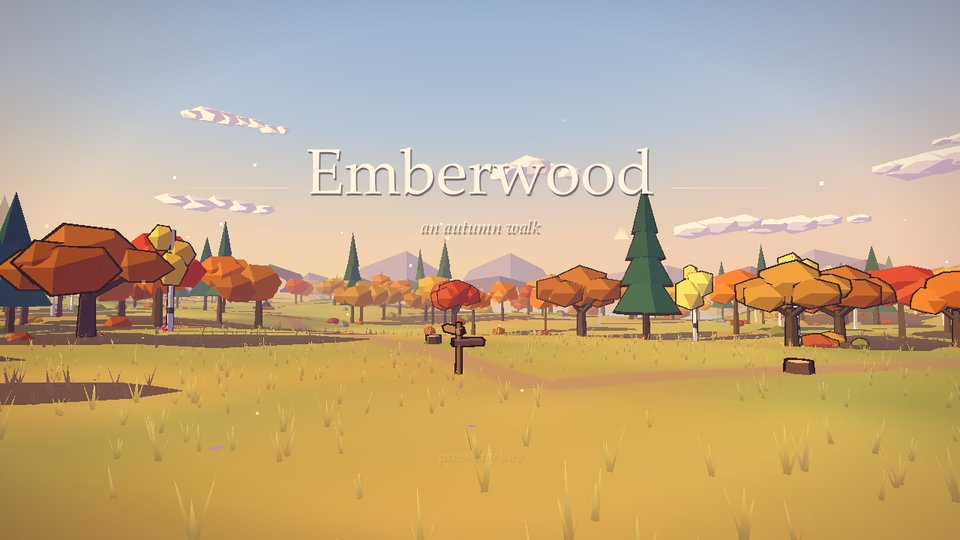

Spelunky Classic — Derek Yu's cave-diving platformer.
Arrows move, Z jumps, X whips.
© 2008, 2009 Derek Yu and Mossmouth, LLC, shared under the Spelunky User License.



Spelunky Classic — Derek Yu's cave-diving platformer.
Arrows move, Z jumps, X whips.
© 2008, 2009 Derek Yu and Mossmouth, LLC, shared under the Spelunky User License.
Emberwood — an autumn walk through a 3D forest.
WASD walk, the mouse looks, M shows the map.
Gravity Grade — falling blocks, up to 20G.
Arrows move and drop, Z and X rotate.
Not affiliated with or endorsed by YoYo Games.
Opening…